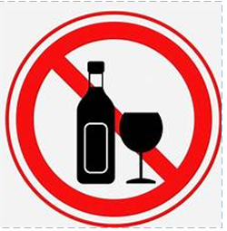

พฤติกรรมเสี่ยงที่ควรหลีกเลี่ยง
การดื่มแอลกอฮอล์ ได้แก่ สุรา เบียร์ ไวน์
ทำให้เกิดภาวะทุพโภชนาการ มีผลเสี่ยงต่อการเกิดมะเร็งช่องปาก ทั้งที่เคยดื่มแต่เลิกแล้ว หรือปัจจุบันยังดื่มอยู่ ยกเว้นมีความความถี่ในการการดื่มน้อยกว่า 1 ครั้ง/สัปดาห์ (ไม่ได้ดื่มทุกสัปดาห์)
